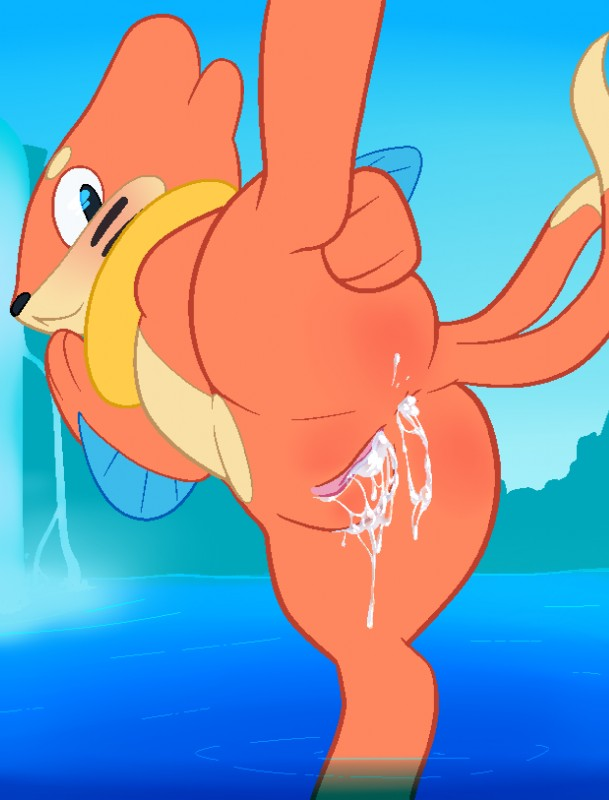
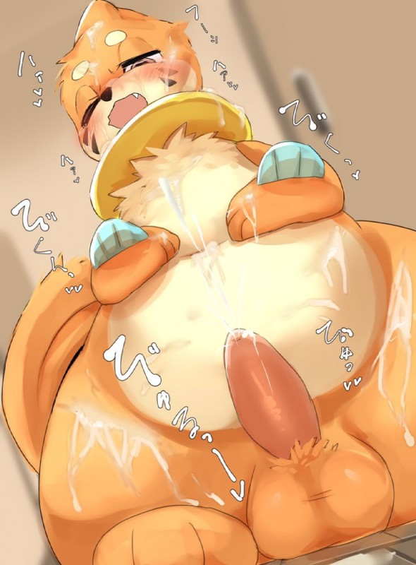
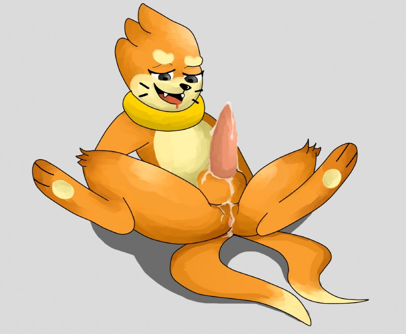

Buizel - #418
A buizel is often found reproducing under the water, as it easier for them to do so there. They are seemingly very passionate during sex, holding on tightly to their partner as they smother their mouth with a tounge-deep kiss, exhaling air into their partner so they can breathe underwater. However, they are perfectly capable of reproducing on land. It is also a rare occurrence to see them with two penises, both which are always noticeably large.
Desc written by "Nururei#9500"
| dex number: | 418 |
| e621 popularity: | 1112 | dom/sub: | dom |
| size: | 4 |
|  |  |  | |
|---|---|---|---|
| nukoti | thanu | nukoti | sirpsycho |
Buizel e621